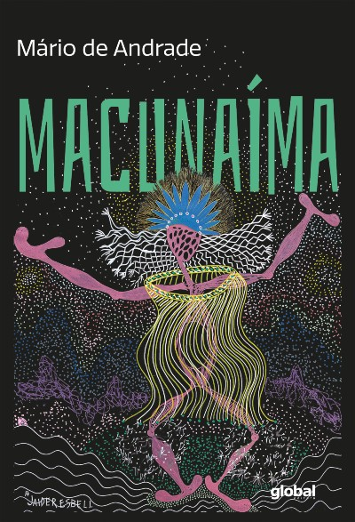
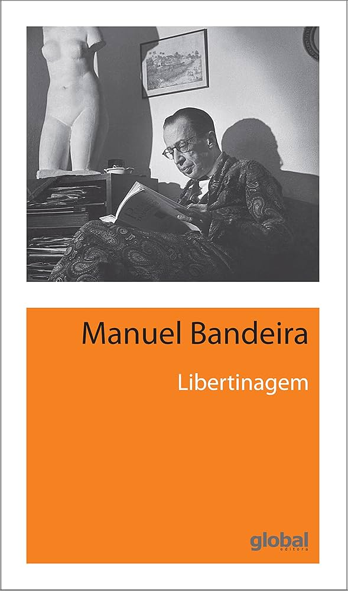

Modernismo
O Modernismo foi um movimento literário e artístico que surgiu no início do século XX, propondo uma ruptura com as tradições clássicas e uma nova forma de enxergar a arte e a literatura. No Brasil, o Modernismo teve início com a Semana de Arte Moderna de 1922, evento que marcou uma transformação cultural e estética, rompendo com os valores conservadores e introduzindo inovações formais, temáticas e estilísticas.
Principais características do Modernismo
1. Ruptura com o Passado: O Modernismo propõe uma rejeição às normas e convenções clássicas da arte, literatura e cultura. Os autores modernistas buscavam novas formas de expressão, livres das amarras acadêmicas e estéticas do passado.
2. Experimentação Formal: Uma das principais características do Modernismo é a experimentação com a linguagem, a forma e a estrutura das obras. Os escritores modernistas criaram novas formas de expressão, usando versos livres, prosa poética, colagens, e explorando a fragmentação da narrativa.
3. Nacionalismo Crítico: No Brasil, o Modernismo trouxe uma reflexão crítica sobre a identidade nacional. Os escritores buscaram valorizar a cultura e o cotidiano brasileiros, ao mesmo tempo em que questionavam os problemas sociais e culturais do país.
4. Temas Urbanos e Cotidianos: Diferente de outros movimentos que valorizavam o passado ou a natureza, o Modernismo deu ênfase à vida urbana, à modernidade e ao cotidiano das pessoas comuns. As transformações sociais, políticas e tecnológicas da época também são temas recorrentes.
5. Liberdade de Expressão: A liberdade criativa era uma marca essencial do Modernismo. A linguagem informal, o uso de coloquialismos e a quebra de padrões estéticos tradicionais foram explorados para criar uma literatura mais conectada com a realidade contemporânea.
Contexto histórico
O Modernismo surgiu em um contexto de grandes transformações sociais e tecnológicas, como o avanço da industrialização, o crescimento das cidades, e as mudanças políticas e culturais no início do século XX. No Brasil, o movimento modernista foi influenciado por tendências europeias, como o futurismo e o expressionismo, mas desenvolveu um caráter próprio com a busca pela valorização da cultura nacional e a crítica às desigualdades sociais.
Obras e autores importantes
Mário de Andrade: "Macunaíma"
Oswald de Andrade: "Manifesto Antropófago"
Manuel Bandeira: "Libertinagem"
Carlos Drummond de Andrade: "A Rosa do Povo"

Conclusão
O Modernismo trouxe uma profunda renovação cultural, promovendo a experimentação artística e a busca por uma identidade nacional crítica. No Brasil, o movimento deixou um legado duradouro, com grandes autores e obras que desafiaram as convenções e ampliaram os horizontes da literatura e da arte.
Com seu espírito inovador e crítico, o Modernismo influenciou não só a literatura, mas também as artes plásticas, a arquitetura e a música, refletindo as mudanças da sociedade e a busca por novas formas de expressão.